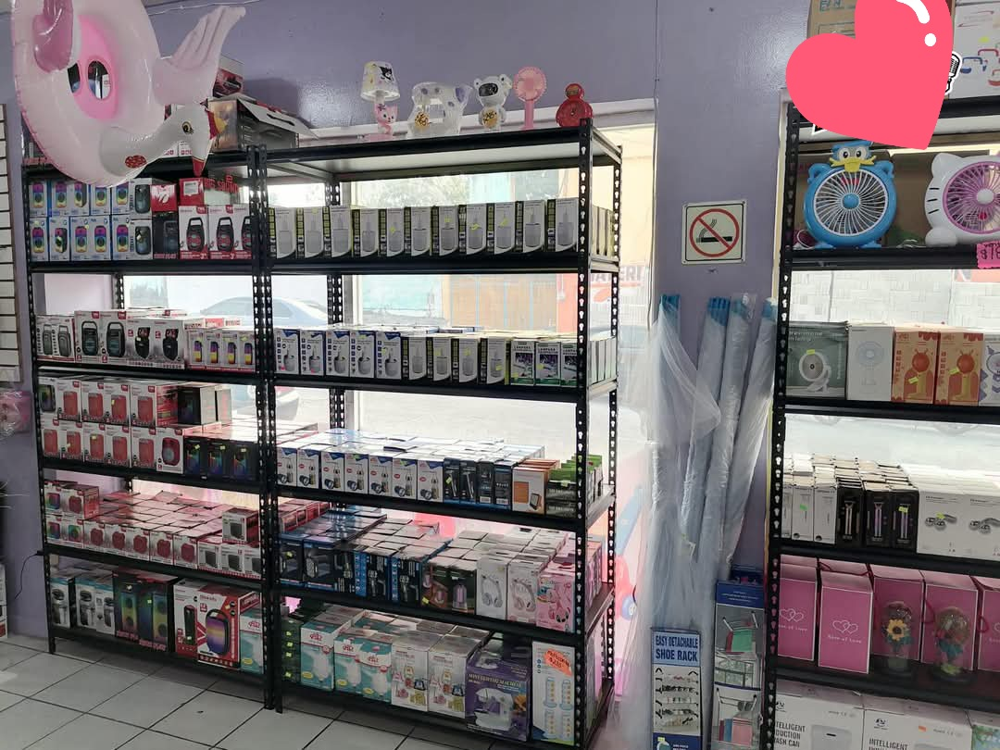
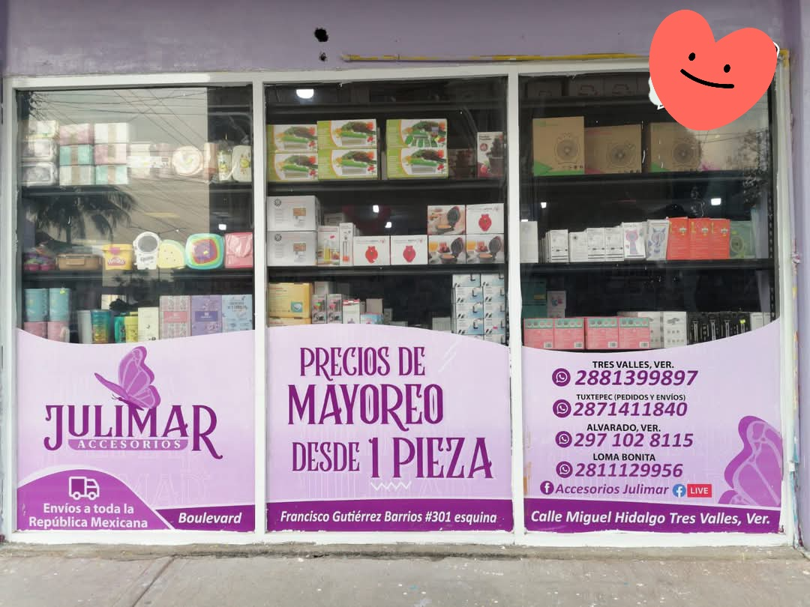
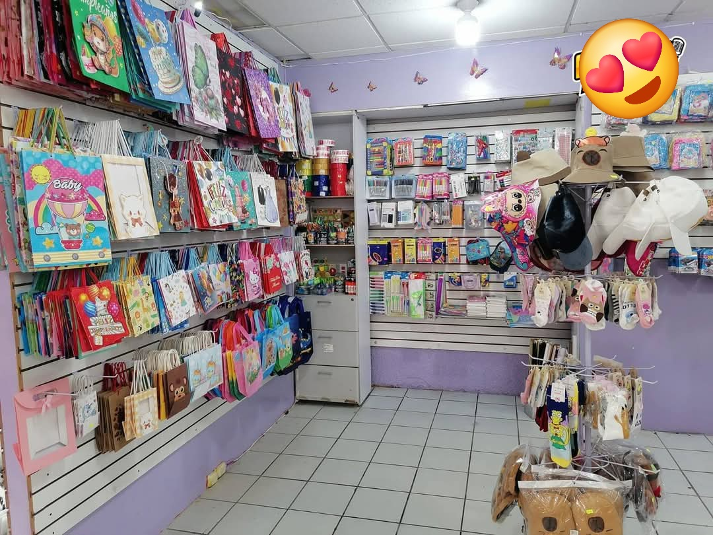

"Accesorios que te hacen brillar juguetes que te hacen sonreír"
En accesorios julimar , nos esforzamos por ofrecer una amplia variedad de productos chinos de alta calidad a precios accesibles. Su objetivo es brindarte una experiencia de compra única y emocionate, con productos que te sorprenderán. Navega por nuestra pagina y descubre nuestros productos más populares, desde accesorios de moda, decoraciones para el hogar hasta juguetes para niños. ¡Todo a precios que te harán sonreír! desde :
Nos esforzamos por brindarte una experiencia de compra única y emocionante. Queremos que cada visita a nuestra tienda sea un descubrimiento, que cada producto te sorprenda y te haga sonreír. Desde los últimos gritos de la moda hasta soluciones prácticas para tu día a día, tenemos algo para todos los gustos y necesidades.

Nos encontramos ubicadas en ALVARO OBREGON, Centro,95300 frente al de coppel o contactanos por FACEBOOK como ACCESORIOS JULIMAR

Si tienes alguna pregunta, sugerencia o simplemente quieres saludar, ¡no dudes en contactarnos! Puedes enviarnos un correo electrónico a: usagiserenity6@gmail.com
¿Necesitas ayuda? ¡Contáctanos! Haz clic aquí para enviar un correo
Horario: Lunes a Viernes 9:00 a. m. - 7:30 p. m. Sábado 9:00 a. m. - 7:30 p. m. Domingo 9:00 a. m. - 4:00 p. m.
¡Contáctanos!
Teléfono: 288 142 1840
Facebook: ACCESORIOS JULIMAR
Correo electrónico: usagiserenity6@gmail.com
¡Gracias por visitar Accesorios Julimar! Esperamos que disfrutes explorando nuestro sitio y que encuentres ese artículo perfecto que estabas buscando, ¡o quizás uno que no sabías que necesitabas!